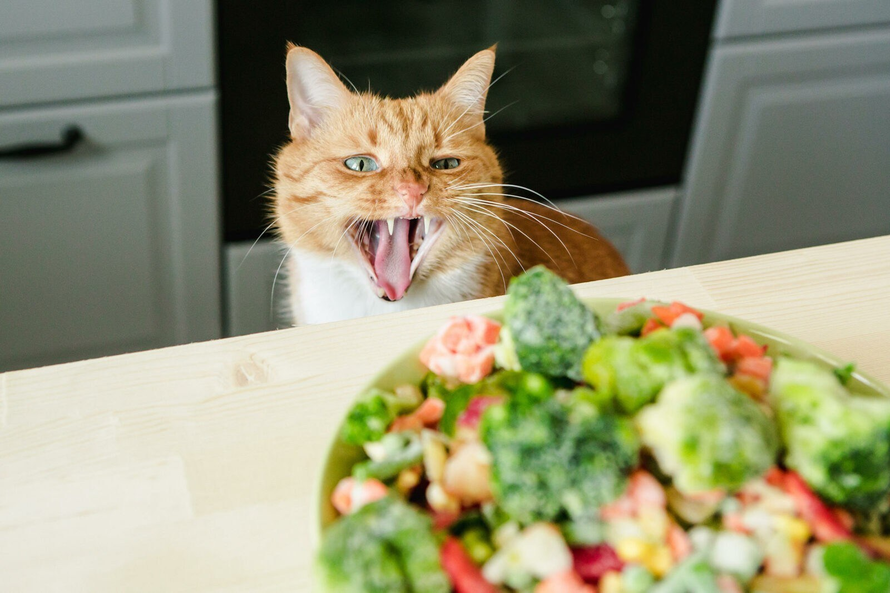
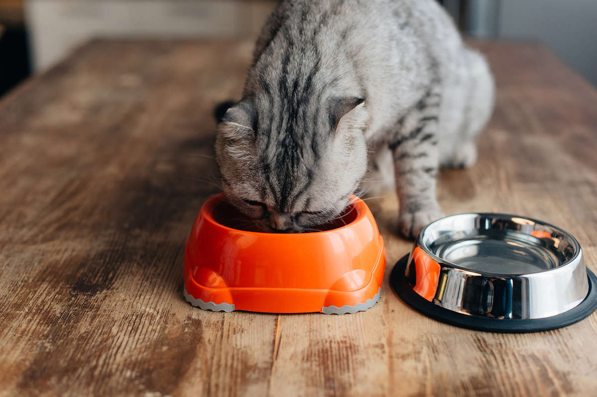
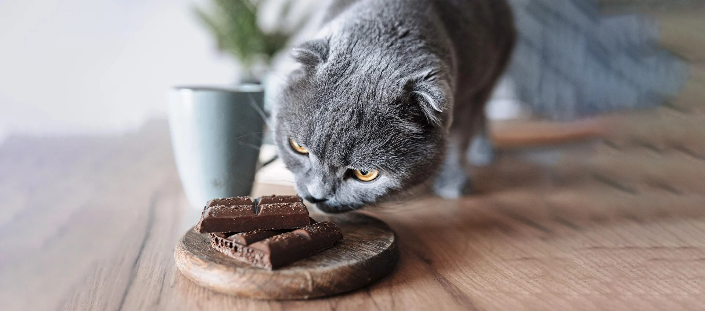
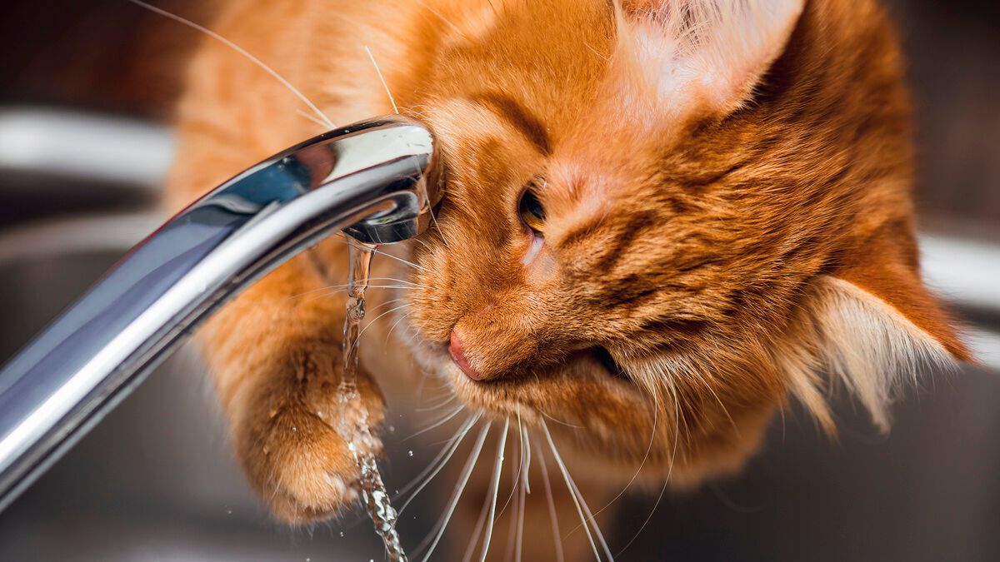

Питание

Какие овощи можно кошкам и что давать опасно?
Кошки — это истинные, облигатные хищники, но это не значит, что в их рационе не может быть ничего, к..

Можно ли котятам молоко?
Кормление животных на самом деле – непростое дело, если подходить к вопросу грамотно и ответственно,..

Какую крупу можно кошкам и какую нельзя?
Кошки — это строгие хищники, потребность в углеводах у которых ниже, чем у животных с другими типами..

Можно ли кошкам хлеб?
Кошки — это строгие хищники, потребность в углеводах у которых ниже, чем у животных с другими типами..

Можно ли кошкам шоколад?
Наверняка многие владельцы слышали о том, что шоколад вреден для питомцев. Нередки истории, когда жи..
